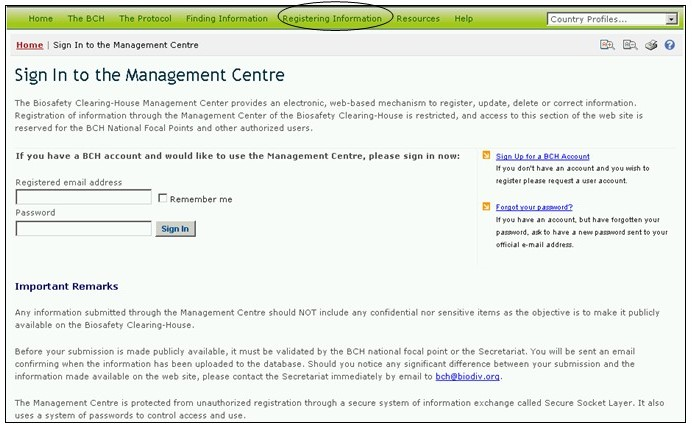

Ссылка: https://bch.cbd.int/member/signin.shtml?returnurl=%2fmanagementcentre%2fdefault.shtml
Центр управления МПБ предоставляет, основанный на Интернет технологии, механизм регистрации, обновления, удаления или исправления информации в базах данных МПБ. В отношении категорий информации, касающейся осуществления Стороной Протокола, вводить сведения в Центр управления МПБ и изменять их могут только Национальные координационные центры МПБ:
- эксперты по биобезопасности;
- Национальные компетентные органы;
- потребности и приоритеты страны;
- решения относительно ЖИО, предназначенных для пищи, корма или обработки, в соответствии со Статьей 11;
- решения относительно ЖИО в соответствии с Процедурой заблаговременного обоснованного согласия;
- законодательство;
- национальные веб-сайты и базы данных по биобезопасности;
- другие решения и заявления;
- региональные и международные соглашения;
- нормативно-правовые акты и руководства;
- отчеты о выполнении заданий экспертами по биобезопасности;
- Национальные отчеты об оценке риска.
Зарегистрированные пользователи могут использовать Центр управления для предоставления МПБ (после подтверждения Секретариатом КБР) следующих категорий информации:
- курсы по биобезопасности;
- проекты и возможности по созданию потенциала;
- международные организации по биобезопасности;
- сведения для новостей МПБ;
- контактная информация;
- общие отчеты по оценке риска;
- сведения для реестров ЖИО / генов / родительских организмов или организмов-доноров;
- сведения для Центра информационных ресурсов по биобезопасности (ЦИРБ);
- сведения для Научно-библиографической базы данных по биобезопасности (НББД).
Секретариат КБР оставляет за собой право рецензирования и проверки любой информации, предоставленной зарегистрированными МПБ пользователями, до ее опубликования. Сведения, предоставляемые для НББД, подтверждаются Международным центром по генетической инженерии и биотехнологии (ICGEB).
Подробные инструкции по использованию Центра управления приведены в Модуле MO06A.

Рисунок 41